AIP-C01 Labs Volume
Maarek labs and practical patterns
How to use this volume
Do the labs. Each chapter is one lab from the course lab pack. This volume rewrites the labs in plain words. Each chapter has the same structure. It shows what the lab teaches. It shows when to use it in production.
It shows how it works internally. It has an architecture diagram with a numbered walkthrough. It shows the exam angles and traps. It has one practice question with full explanations.
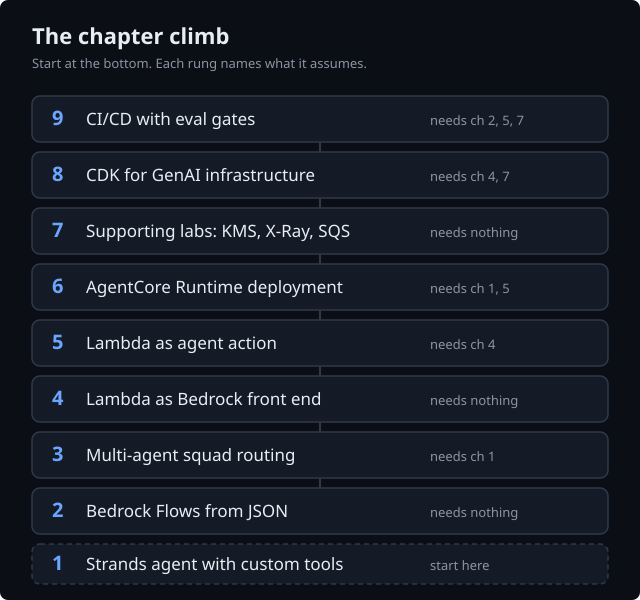
The code here is for teaching. It is new for this volume. It is not copied from the course files. The lab sources are course material. This volume explains the concepts in its own words.
Check the facts. AWS service names, features, model IDs, and API shapes in this volume are correct. The team checked them against live AWS documents on 2026-09-28. The page marks items it did not check UNVERIFIED inline. Limits and defaults can change. Check the documents when you build.
1. Lab: Strands agent with custom tools
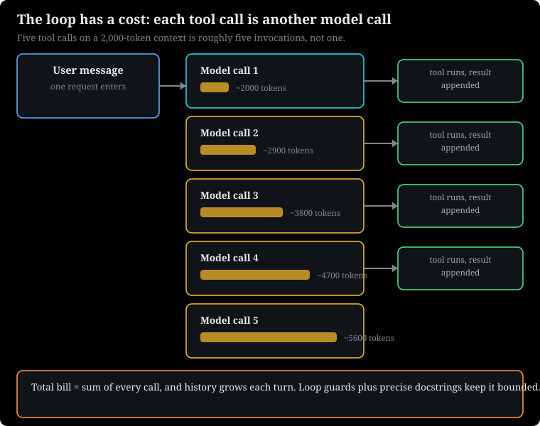
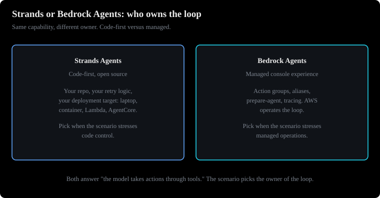
How to read this diagram
- Left: Strands. You write the agent loop in code. You host it yourself.
- Right: Bedrock Agents. AWS hosts the loop. You configure it.
- Bottom: the exam line. Code control means Strands. Managed means Bedrock Agents.
Build a working agent with a few lines of Python. Use one model, a tool list, a system prompt, and a custom function. The model can call this function.
Prerequisites: None. This is the start. It has one model, some tools, and the agent loop. This lab defines all of them.
What this lab teaches
Strands Agents is an open-source Python SDK. It builds agents. An agent has three parts. It has a model, which is the brain. It has tools, which are the hands. It has a prompt, which is the personality and instructions.
Create an Agent. Give it a list of tools. Call it like a function with a question. The SDK runs the agent loop for you.
The agent loop is the main idea. A single model call cannot use tools alone. So, the loop runs the cycle. Send the prompt to the model. The model replies with text or a request to call a tool. The SDK runs the tool.
It returns the result to the model. Repeat until the model gives a final answer. Strands is model-driven. The model decides at each step if it needs a tool and which tool.
A custom tool is a plain Python function. It has the @tool decorator. The docstring becomes the tool description. The model reads this description to decide what to call. The type hints become the input schema. The docstring is routing logic, not documentation.
A vague docstring, like "utility function", makes tool selection random.
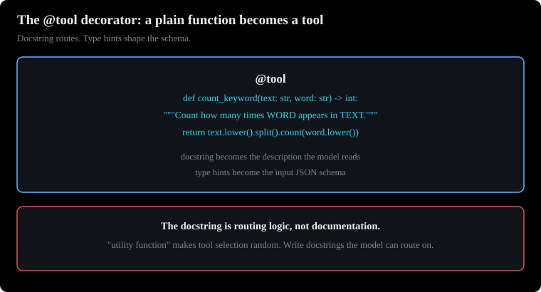
How to read this diagram
- Top: the docstring. The model reads it to decide when to call the tool.
- Middle: the type hints. They become the input schema.
- Bottom: the body. It runs when the model calls the tool.
The strands-agents-tools package has ready-made tools. These include a calculator and a current-time tool. So, a lab agent uses built-in tools and custom tools. The callback_handler controls streaming output. Set it to None to stop intermediate steps.
Why it exists: when you use it in production
Without a framework, each team writes the same loop. They parse the model's tool request blocks. They validate arguments. They execute code. They format results. They handle errors.
They track conversation state. Most agent bugs are in that loop. Strands manages the loop. Your code is only the business logic, which is the tools themselves.
Use Strands when you need full code control over an agent. This includes custom retry logic, your own tools, and your own deployment target. It is the code-first option. It is an alternative to the fully managed Bedrock Agents console. You can run a Strands agent on a laptop. You can run it in a container.
You can run it on Lambda. You can run it on AgentCore Runtime, which is in chapter 6.
How it works
Step by step, for the pattern Agent(tools=[calculator, current_time, count_keyword], system_prompt=...):
- You define tools. Each
@toolfunction registers its name. It registers its docstring. It registers a JSON schema from its type hints. - You make the
Agent. The system prompt goes before every conversation. The tool list becomes the tool definitions. The model API expects these definitions. - You call the agent with a message. For example, you call it with three tasks. The SDK sends the system prompt to the model. It sends the message to the model. It sends the tool definitions to the model. Strands uses the Bedrock Converse API for Bedrock models. Converse is Bedrock's unified request format. It is for text generation and tool use. It has one shape across model providers.
- The model returns one or more tool calls. The SDK runs each Python function. It uses the arguments the model chose.
- Tool results return to the model. They return as tool result blocks. The model can call more tools. Or the model can finish with text.
- The call returns an agent result object. The string form of the object is the final answer.
Adapted teaching snippet (a few lines, written for this volume):
from strands import Agent, tool
# A tool is a plain Python function with the @tool decorator.
# WHAT: registers word_count as a callable tool for the agent.
# WHY the decorator: Strands reads the function name, the docstring, and the
# type hints (text: str -> int) to build the JSON schema the model sees.
# The docstring is routing logic, not docs: the model picks tools by reading it.
# WHAT BREAKS: a vague docstring ("utility function") makes the model guess,
# so tool selection becomes random. Missing type hints break schema generation.
@tool
def word_count(text: str) -> int:
"""Count the words in a piece of text. The model reads this sentence."""
return len(text.split())
# WHAT: creates the agent with one tool and a system prompt.
# WHY: system_prompt is prepended to every conversation turn; tools=[...] is
# converted into the tool definitions sent with each model call.
# WHAT BREAKS: passing tools as a single function instead of a list silently
# registers nothing; the agent then answers without ever calling tools.
agent = Agent(tools=[word_count], system_prompt="You are a study coach.")
# WHAT: one agent turn. The SDK loops: model -> tool call -> tool result -> model.
# WHY print(): agent(...) returns a result object; str() of it is the final text.
# WHAT BREAKS: each tool call is another billed model invocation, so a chatty
# tool loop multiplies cost. Loop guards (max iterations) belong here in prod.
print(agent("How many words are in 'cloud nine'?"))
Each tool call costs another model invocation. The conversation history grows with every turn. If an agent makes five tool calls over a 2,000-token context, you pay for about five invocations. You do not pay for one invocation. This is why loop guards matter for cost. This is why precise tool descriptions matter for cost.
Common misunderstanding.
The docstring is the routing logic. The model uses it to pick tools. Teams that write "utility function" get random tool selection. They blame the model.
User message ("what time is it? calculate X, count 'prompt' in this text")
|
v
+------------------+ +---------------------------+
| Strands Agent |----->| Model (Bedrock Converse) |
| event loop |<-----| decides: answer or tool? |
+------------------+ +---------------------------+
| toolUse block ^ toolResult block
v |
+------------------+ |
| Python functions |--- results back ----+
| calculator, |
| current_time, |
| count_keyword |
+------------------+
|
v
Final answer text
Figure 1.1: The Strands agent loop. The model decides each step. The SDK runs the Python functions. Caption: ASCII diagram drawn for this volume.
How to read this diagram
- Start at the top. The user message enters the agent. The agent is not the model. It is the loop that drives the model.
- The loop sends the system prompt to the model. It sends the message to the model. It sends the tool definitions to the model. It uses the Converse API.
- The model replies with final text. Or the model replies with a toolUse block. The block names a function and arguments. The arrow to the right shows this decision point.
- A toolUse block goes down to the Python functions. The SDK runs the real code. It uses the arguments the model chose.
- Results flow back up. They flow as toolResult blocks. The loop repeats from step 2. It repeats until the model returns text.
What breaks if a component fails
- If a tool raises an exception, the loop stops. Or the model gets an error block. The model cannot use the block. You must catch the exception. Wrap tool bodies in error handling.
- If the tool list is empty, the agent is only a chatbot. If the docstrings are vague, the model calls the wrong tool. Or the model invents arguments.
- If the model API throttles, the whole loop stops. Put retries with backoff around the agent call. Do not put them inside each tool.
This section discusses exam angles and traps.
- A team wants a Python agent. The agent must call internal functions. It needs minimal boilerplate. It needs full code control. The answer names Strands Agents. It uses the Agent Squad framework from chapter 3. It uses
@toolfunctions. Distractors: tool loops built by hand with raw InvokeModel calls. This works but has a high operational burden. Another distractor is the Bedrock Agents console. This is wrong when the scenario stresses code-first deployment on their own infrastructure. - Trap: "Strands replaces Bedrock Agents." This is false. They are alternatives for different needs. Bedrock Agents is the managed service. It has action groups and aliases. Strands is the SDK. You host Strands yourself. You can host it on AgentCore.
- Tools execute with your code's permissions. A tool that calls AWS APIs needs IAM scope. IAM is the AWS permission system. The exam tests least privilege on tool permissions.
- Strands' Bedrock model provider uses the Converse API. It does not use the legacy InvokeModel path. If a question mixes Strands with provider-specific InvokeModel bodies, that is the trap.
Practice question
A startup's developers need a Python agent. The agent must answer support questions. It must call two internal functions. One function looks up order status. The other function computes refunds. The developers want full control of the code.
They want to deploy on their own containers. They want to avoid writing the model tool-call loop by hand. Which approach is MOST correct?
A. Write a custom loop with InvokeModel. This loop parses toolUse blocks. It executes the functions. It feeds results back.
B. Build the agent with the Strands Agents SDK. Expose each internal function as an @tool. Use a clear docstring and type hints.
C. Create a Bedrock Agent in the console with action groups. Code-first frameworks cannot call internal functions.
D. Put both functions behind API Gateway. Have the model call the HTTP endpoints. Read the URLs from the system prompt.
B is correct. Strands is the code-first framework. @tool turns plain Python functions into tools. The SDK owns the loop. The agent deploys anywhere. This includes the team's own containers. The docstring and type hints give the model the interface it needs.
A is wrong. Hand-rolling the loop duplicates the framework's work. It adds operational burden. The exam prefers the framework or managed path. This is true when the scenario does not demand custom loop behavior.
C is wrong for two reasons. The premise is false. Code-first frameworks call internal functions easily. This is their main strength. The scenario asks for code control. It asks for self-hosted deployment.
This points away from the console-first managed agent.
D is wrong. Models cannot reliably "call URLs from the system prompt." Tool use needs a real tool interface with schemas. It does not need prompt text. This distractor tests if you confuse prompt content with tool definitions.
Next: Lab 2 trades the agent's freedom for determinism. It chains prompts into a Bedrock Flows pipeline.
2. Lab: Bedrock Flows from JSON
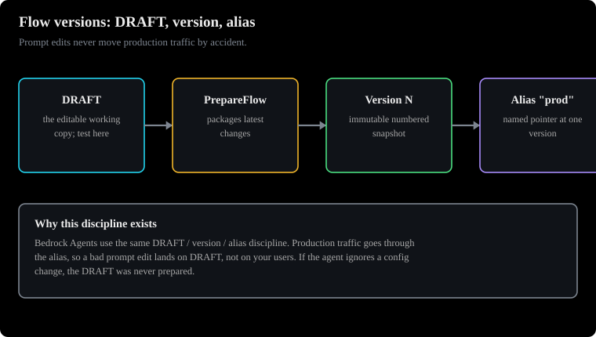
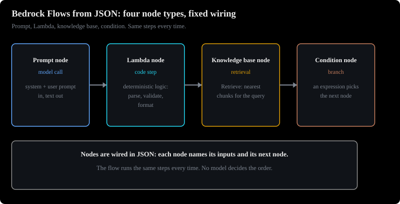
How to read this diagram
- Read top to bottom. Each box is a node.
- Arrows show the fixed path. The path never changes at runtime.
- The condition node branches on an expression.
Why this chapter comes next. Lab 1 built an agent. The agent reasons freely. Some workflows must not use the model's judgment. They must run the same steps every time. This lab trades the agent's freedom.
It creates a deterministic prompt pipeline.
Chain prompts into a deterministic pipeline. The lab's prompt list becomes a real flow definition. It has nodes, connections, and conditions.
Prerequisites: None. You define the flow as JSON. No agent code is necessary.
This lab teaches you this information.
Amazon Bedrock Flows build deterministic multi-step GenAI workflows. Older material calls them Prompt Flows. You define a flow as JSON. It has two arrays: nodes and connections. Each node is one step. Connections wire the steps together into paths.
The lab's PromptChaining.json holds a simple list of three prompts. These prompts name a city, describe it, and describe its cuisine. In a real flow definition, each prompt becomes a Prompt node. Data connections pipe each node's output into the next node's input.
Node types cover the building blocks. These are Input and Output (entry and exit), Prompt (one model call with a template), Agent (hand a step to an agent), KnowledgeBase (a retrieval step). KnowledgeBase pulls answers from your documents. It uses retrieval-augmented generation (RAG). The model answers from retrieved passages. It does not answer from its training.
Chapter 7 has the full RAG story. Other node types are Condition (branch on logic), Iterator (loop over a list), LambdaFunction (custom code), plus storage nodes. A connection is either Data or Conditional. A Data connection moves a named output to a named input. A Conditional connection follows a path only when its condition expression is true.
Why it exists: when you use it in production
Not all workflows need an autonomous agent. If the path is fixed, with three prompts in and one answer out, an agent's reasoning loop is expensive. It is also not deterministic. Flows give you a visual builder. They also give you a JSON definition. You can version this definition in git.
You can test and deploy it. Product teams can edit prompt text. Engineers do not need to redeploy code. The definition's structure makes the pipeline auditable. You can see which step feeds which step.
How it works inside
A flow definition has this shape. This is for teaching. It shows the lab's three prompts.
{
"nodes": [
{"name": "FlowInput", "type": "Input"},
{"name": "NameCity", "type": "Prompt",
"configuration": {"prompt": {"template": "Name a random city..."}}},
{"name": "DescribeCity", "type": "Prompt",
"configuration": {"prompt": {"template": "Describe this city: {{city}}"}}},
{"name": "FlowOutput", "type": "Output"}
],
"connections": [
{"name": "c1", "source": "FlowInput", "target": "NameCity",
"type": "Data",
"configuration": {"data": {"sourceOutput": "document", "targetInput": "input"}}},
{"name": "c2", "source": "NameCity", "target": "DescribeCity",
"type": "Data",
"configuration": {"data": {"sourceOutput": "modelCompletion", "targetInput": "city"}}}
]
}
How to read it: each connection names a source node and a target node. The data block maps a named output of the source (sourceOutput) to a named input of the target (targetInput). This is why prompt templates use {{variable}} placeholders. A Conditional connection carries a condition expression. The flow follows the first matching branch. Expressions use JSONPath-style references to node outputs.
Lifecycle: after you edit a flow, run PrepareFlow. This packages the latest changes into the DRAFT version for testing. For production, create an alias. The alias points at a numbered version. This prevents prompt edits from moving production traffic by accident. DRAFT is the editable working copy.
A version is an immutable numbered snapshot of a prepared DRAFT. An alias is a named pointer. For example, "prod" is an alias. It points at one version. This prevents prompt edits from moving production traffic by accident. Bedrock Agents use the same DRAFT, version, and alias rules.
You will see this again in chapter 5.
One detail about the Iterator node: community sources say it is sequential. It processes list items one at a time. It does not process them in parallel. This is UNVERIFIED. The sequential-iterator behavior was not confirmed in the live AWS docs during this build. Treat it as community-reported.
Common misunderstanding.
Flows and agents solve different problems. A fixed three-step chain is a flow. A task where the model must decide which tools to call, in which order, with retries, is an agent. If you put an agent's job into a flow, you get rigidity. If you put a flow's job into an agent, you get cost and non-determinism.
Input ("go")
|
v
+-----------+ Data: modelCompletion -> city +--------------+
| Prompt: | ------------------------------> | Prompt: |
| NameCity | | DescribeCity |
+-----------+ +--------------+
|
Data: modelCompletion -> city
v
+--------------+
| Prompt: |
| Cuisine |
+--------------+
|
v
Output
With a branch:
+-----------+ Conditional: $.sentiment == "negative" +----------+
| Condition | ---------------------------------------> | Prompt: |
| node | | Apology |
+-----------+ Conditional: otherwise +----------+
--------------------------------------> +----------+
| Prompt: |
| Thanks |
+----------+
Figure 2.1: Top: the lab's prompt chain as flow nodes and Data connections. Bottom: a Condition node branching on an expression. Caption: ASCII diagram drawn for this volume.
How to read this diagram
- Top half: follow the arrows down. Each box is a node. Each arrow is a Data connection.
- Read each arrow's label as "take this named output, feed it into that named input." The prompt template has a
{{city}}placeholder. It is the receiving end. - Bottom half: a Condition node has two Conditional connections. The flow evaluates the condition expression. It follows the first match. Only one path runs.
- Input and Output nodes are the flow's boundary. There is one entry point. There are one or more exit points.
What breaks if a component fails
- If a
targetInputname does not match a placeholder in the prompt template, the step runs with an empty variable. Name mismatches are the most common flow bug. - If you edit nodes and skip PrepareFlow, the DRAFT version still holds the old definition. Your tests will give you wrong results.
- If a condition expression references a field that does not exist, the branch never matches. The flow takes the fallback path silently.
This section discusses exam angles and traps.
- Scenario: "a three-stage prompt chain with branching; the marketing team edits prompt text weekly; no engineer redeploys." The most correct answer is Bedrock Flows. This includes Prompt Management. Prompt Management is Bedrock's versioned prompt store. Every prompt gets numbered immutable versions. Flows are for the chain. Distractors: Bedrock Agents are too much for a fixed deterministic chain. Step Functions are the correct answer when the workflow needs timeouts, human approvals, or non-GenAI orchestration. But Step Functions are heavier than Flows for a pure prompt chain. Hardcoding prompts in Lambda violates the no-redeploy constraint.
- Second angle: "the flow ignores recent edits" points at the missed PrepareFlow step.
- Flows versus Step Functions is a common confusion pair. Rule of thumb: prompt-centric fixed chains go to Flows. General orchestration with waits, retries across services, and human approvals goes to Step Functions. Scenarios often allow both. The "most correct" answer matches the constraint words.
- Connection types are Data and Conditional. If an option names other connection types, the option is not correct.
- Prompt variants are for A/B testing. Prompt versions are releases that do not change. The exam changes these terms.
Practice question
A media company uses a fixed pipeline. The pipeline extracts topics from an article. It drafts a headline from the topics. Then it classifies the headline's tone. Editors change the prompt wording each week. Engineering must not redeploy for wording changes.
Which approach is MOST correct?
A. Build a Bedrock Agent with three action groups. Use one action group for each stage. Let the agent decide the order at run time.
B. Define a Bedrock Flow with three Prompt nodes. Chain the nodes with Data connections. Manage the prompts with Prompt Management versions. Show a flow alias for production.
C. Hardcode the three prompts in a Lambda function. Put the function behind API Gateway. Redeploy the function each week.
D. Use Step Functions with three Lambda tasks. Each task calls InvokeModel. Flows cannot chain prompts.
B is correct. The pipeline is fixed. The pipeline uses prompts. Flows are for this use. Data connections send the output of each stage to the next stage. Prompt Management versions let editors change wording.
This does not need code redeploys. The alias keeps production on a tested version.
A is wrong. An agent adds reasoning overhead. An agent adds nondeterminism to a fixed pipeline. Nothing here needs dynamic tool choice.
C is wrong. It does not obey the no-redeploy rule in the scenario.
D is wrong. Its premise is false. Chaining prompts is the main use case for Flows. Step Functions would be the answer if the scenario needed human approvals. Step Functions would be the answer if the scenario needed cross-service waits. The scenario does not need these.
Next: Lab 3 goes from one worker to many workers. A classifier routes each request to the correct specialist.
3. Lab: Multi-agent squad routing
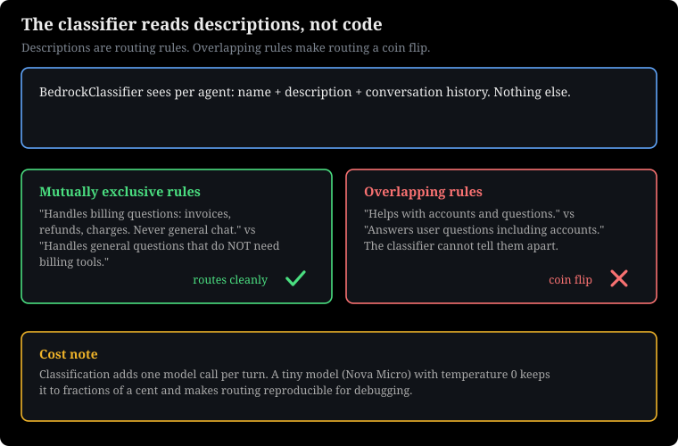
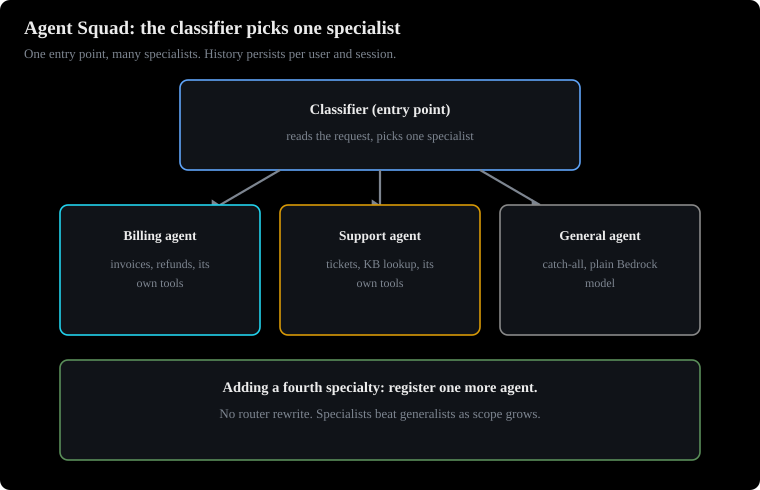
How to read this diagram
- Top: the request arrives.
- Middle: the classifier reads the request and picks one specialist.
- Bottom: the specialist answers. It has its own tools.
Why this chapter comes next. Labs 1 and 2 each built one worker. Real systems need several specialists behind one entry point. This lab adds the classifier. The classifier routes each request to the correct specialist agent.
Use one entry point. Use many specialist agents. A classifier reads each request. It routes the request to the correct specialist.
Prerequisites: Chapter 1 (the Strands agent with a custom tool). This lab registers the Strands agent as a specialist.
What this lab teaches
Agent Squad is an open-source multi-agent orchestration framework. The pip package name is agent-squad. Do not use one large agent that does everything. Register several specialist agents with one orchestrator. Each request goes through a classifier. The classifier is usually a small, fast model.
It picks the best specialist for that request. The orchestrator then gives the request to the chosen agent. It returns the agent's answer with routing metadata.
The framework also supports composite agents. A ChainAgent runs a fixed pipeline. The output of each agent feeds the next agent. A SupervisorAgent coordinates workers. For chat history, it uses a ChatStorage layer. The layer is in-memory by default.
It uses DynamoDB or SQL for production.
Why it exists: when you would use it in production
Specialists are better than generalists as the scope grows. A billing agent, a technical support agent, and a general assistant each use different tools. They use different prompts and knowledge. Adding a fourth specialty means registering one more agent. It does not mean rewriting a router. The classifier pattern also lets you mix frameworks.
A Strands agent, a plain Bedrock model agent, and a Lambda-backed agent can all sit behind the same entry point.
How it works under the hood
Do these steps to set up the lab. This includes a Strands specialist and a general Bedrock LLM agent.
- Make the orchestrator with a classifier:
AgentSquad(classifier=...). The BedrockClassifier is a model call. It gets the user input, the conversation history, and the list of registered agents. It returns the agent that must handle the request. - Register each agent with
add_agent. The name and description are important. The classifier reads them. "Handles all general questions that do not require calculator, current time, or keyword counting" is a real routing instruction. It is not a label. - Wrap foreign agents in an adapter. The lab wraps the Strands agent in a small class. This class changes a Strands result into the framework's ConversationMessage format. This adapter pattern lets any framework join the squad.
- Call
await orchestrator.route_request(user_input, user_id, session_id). It is a coroutine. You must await it. The orchestrator reads history from ChatStorage. It classifies. It dispatches. It saves both sides of the exchange. It returns a response object with metadata that names the chosen agent. - Branch on
response.streaming. If it is in streaming mode, the output is an async generator of chunks. If not, it is a single message. Forgetting this branch is the common integration bug.
This is a teaching snippet. It is for this book.
from agent_squad.orchestrator import AgentSquad
from agent_squad.agents import BedrockLLMAgent, BedrockLLMAgentOptions
from agent_squad.classifiers import BedrockClassifier, BedrockClassifierOptions
# WHAT: the orchestrator plus its classifier. The classifier is a small LLM call
# that reads the request and picks one specialist agent per turn.
# WHY a separate classifier: one cheap call (Nova Micro, temperature 0) routes,
# so the expensive specialist model only runs once it is chosen.
# WHAT BREAKS: no classifier configured means no routing; every request would
# need manual dispatch. Temperature above 0 makes routing non-deterministic.
orchestrator = AgentSquad(classifier=BedrockClassifier(BedrockClassifierOptions()))
# WHAT: register one specialist. name + description are the routing rules.
# WHY the description matters: the classifier LLM reads it to decide. Write it
# as a mutually exclusive rule ("handles X, never Y"), not a label.
# WHAT BREAKS: two agents with overlapping descriptions make routing a coin flip.
orchestrator.add_agent(BedrockLLMAgent(BedrockLLMAgentOptions(
name="General Assistant",
description="Handles general questions.",
)))
# WHAT: route one request. route_request is a coroutine: classify -> dispatch
# to the chosen agent -> save both sides to ChatStorage -> return response.
# WHY user_id + session_id: history is stored per user per session; wrong or
# missing ids mix conversations together.
# WHAT BREAKS: forgetting `await` returns a coroutine object, not a response,
# and nothing runs. Forgetting to branch on response.streaming (below) is the
# classic integration bug: streaming mode yields an async generator of chunks.
response = await orchestrator.route_request("What is the capital of France?",
user_id="u1", session_id="s1")
print(response.metadata.agent_name) # which specialist was picked
Cost math: classification adds one extra model call per turn. Use a small model like Nova Micro for the classifier. This keeps the call cost to fractions of a cent. The lab configures the classifier with low max tokens and temperature 0 for this reason. Deterministic classification (temperature 0) also makes routing reproducible. This is important for debugging.
Common misunderstanding.
The classifier does not match keywords. It is an LLM that reads your agent descriptions. If two agents have descriptions that overlap, routing becomes a coin flip. Write descriptions as routing rules that do not overlap.
User request ("calculate 3111696 / 74088")
|
v
+---------------------+ +----------------------+
| AgentSquad |---->| BedrockClassifier |
| orchestrator | | (small fast model) |
| route_request() |<----| reads agent catalog |
+---------------------+ +----------------------+
| chosen: "Calculator/Time/Keyword agent"
v
+---------------------+ +----------------------+
| Specialist agents | | ChatStorage |
| - Strands (tools) | | in-memory (dev) or |
| - Bedrock LLM |<--->| DynamoDB (prod) |
| (general) | | per user+session |
+---------------------+ +----------------------+
|
v
Answer + metadata.agent_name ("which agent answered")
Figure 3.1: Agent Squad request flow. The classifier picks one specialist per request. History stays for each user and session. Caption: This ASCII diagram is for this book.
How to read this diagram
- Start at the top. A user request enters
route_requestwith a user ID and session ID. - The orchestrator asks the classifier which registered agent fits. The classifier sees only names and descriptions. It does not see the agents' internal parts.
- The chosen specialist processes the request. Specialists can be different frameworks. The adapter in the lab makes the Strands agent use the squad's message format.
- ChatStorage on the right keeps the exchange for each user and session. This means follow-up turns keep context. In production, this is DynamoDB. It is not memory.
- The response returns the answer. It also returns metadata that names the chosen agent. You log this for routing audits.
What happens if a component fails
- If agent descriptions overlap, the classifier routes inconsistently. Fix the descriptions. Do not fix the model.
- If ChatStorage is in-memory in production, every restart deletes conversation history. Multi-instance deployments do not agree. Use DynamoDB.
- If you forget
awaitonroute_request, you get a coroutine object. You do not get an answer. If you ignoreresponse.streaming, streaming agents break your client.
This section discusses exam angles and traps.
- Scenario: specialist agents for tax, investment, and estate planning must work together. They must use tools. They must keep memory for weeks. They need human approval over a threshold. The most correct answer combines an orchestration framework. This is Agent Squad or Strands multi-agent. It uses DynamoDB-backed memory and Step Functions for the approval workflow. Distractors: one large single prompt (it does not scale, it has no tool isolation). Lex (it is a conversational UI, not autonomous orchestration). S3 for conversation memory (it has the wrong access pattern and latency).
- The second angle is "which agent answered and why". This shows routing data and the agent catalog of the classifier.
- Do not confuse the classifier of the squad with a Bedrock prompt router or an inference profile. The classifier routes between your agents. Prompt routers route between models based on cost and quality. Inference profiles route for regional availability. These are three different mechanisms.
- Memory for weeks means durable storage. Use DynamoDB. Session memory inside the agent process is only short-term.
- Human approval for a money threshold is a Step Functions workflow. It has a callback or a task token. It is not a prompt instruction to "ask a human."
Practice question
A company uses three specialist agents behind one chat endpoint. These are a billing agent with account tools, a support agent with a knowledge base, and a general assistant. Each request must go to only one specialist. Conversation history must continue after restarts. The team must log which specialist handled each request. Which combination is MOST correct?
(Select TWO.)
A. Use an Agent Squad orchestrator with a BedrockClassifier in front of the agents. Use agent names and descriptions for each agent.
B. Store conversation history in the orchestrator's default in-memory ChatStorage.
C. Use DynamoDB-backed ChatStorage. Key it by user ID and session ID. Log response data to show the chosen agent.
D. Combine all three specialists into one agent. Use one long system prompt to make routing simple.
A and C are correct. A gives intent-based routing. It uses a real classifier that reads the agent catalog. C gives durable history for each session. It also provides the audit trail that shows which agent answered. The scenario needs this audit trail.
B is wrong. In-memory storage stops when the process stops. The requirement "must survive restarts" makes it wrong. This is the common durable-versus-ephemeral problem.
D is wrong. Combining specialists removes tool isolation. It makes the prompt a bottleneck. The scenario needs specialist routing. The exam rewards the orchestrator pattern more than the mega-prompt.
Next: Lab 4 puts the stable front door in front. This is API Gateway and Lambda as the Bedrock front end.
4. Lab: Lambda as Bedrock front end
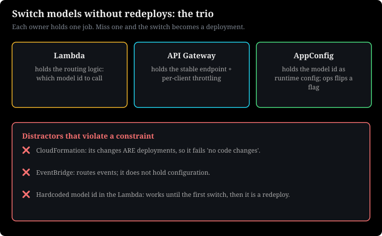
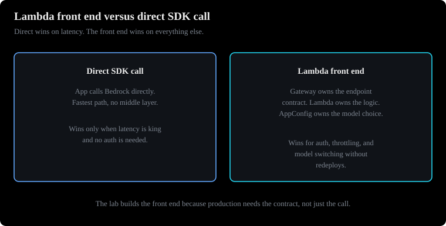
How to read this diagram
- Left path: direct call. The app calls Bedrock. Nothing is in between.
- Right path: Lambda front end. API Gateway and Lambda sit in front.
- Bottom: production needs the front end. Demos can call direct.
Why this chapter comes next. Labs 1 to 3 ran on your laptop. Production needs a stable front door first. This lab puts API Gateway and Lambda in front of Bedrock calls. This is the serving path that every later lab uses.
Put a stable HTTP front door in front of your model calls. Use API Gateway for the endpoint. Use Lambda for the logic.
Prerequisites: You need only basic AWS knowledge. This lab introduces Lambda, API Gateway, and AppConfig from the start.
What this lab teaches
AWS Lambda is serverless compute. You upload a function. AWS runs it when events happen. You pay for each time it runs. API Gateway is the managed front door. It gives you a stable HTTPS endpoint.
It has authentication, throttling, and request routing. It sends requests to Lambda. The lab's lambda-code.py shows the Lambda proxy integration. The handler receives an event. It does work. It returns a dictionary with statusCode, headers, and a JSON-string body.
API Gateway changes that dictionary into the HTTP response that the caller sees.
This pair is the standard synchronous front end for GenAI. The client calls your API. API Gateway authenticates and throttles. Lambda checks the request. It selects the model. It calls Bedrock.
It returns the answer. The lab's hello-world handler is the basic structure. You add a Bedrock call to it.
Why it exists: when you would use it in production
Calling Bedrock directly from a browser or mobile application means sending AWS credentials to the client. It also gives every client direct model access. The Lambda front end keeps credentials on the server side. It enforces throttling for each client at the gateway. It checks inputs before they cost you tokens. It gives you one place to change the model without changing clients.
This is also where the exam's preferred model-switching trio lives. Lambda holds the routing logic. API Gateway holds the stable endpoint. AppConfig holds the model identifier as runtime configuration. So, switching models does not need a redeploy.
How it works
- The client sends an HTTPS request to the API Gateway endpoint. The Gateway checks the authorization method. This method can be IAM, Cognito authorizer, or an API key. The Gateway applies the throttling limit. It sends the request to Lambda as a proxy event.
- The Lambda handler reads the event body. It checks the event body for required fields. It checks the event body for correct lengths. It checks the event body for prompt-injection payloads. It reads the current model identifier from AppConfig. AppConfig is the AWS runtime configuration store. It reads the identifier at runtime.
- Lambda calls Bedrock. It usually calls the Converse API for its unified request shape. It waits for the response. It formats the proxy response:
{"statusCode": 200, "headers": {"Content-Type": "application/json"}, "body": json.dumps(result)}. - API Gateway returns the response to the client. Failures show as 4xx for bad input. Failures show as 5xx for downstream errors. The handler must not show stack traces in error bodies. The handler must not show credentials in error bodies.
This is an adapted teaching snippet. It shows the proxy response shape. The authors wrote it for this book.
import json
# WHAT: Lambda behind API Gateway (proxy integration) calling Bedrock Converse.
# WHY each line:
# - model_id from AppConfig at runtime: swap models without redeploying.
# Hardcoding the model ID means a redeploy for every model change.
# - event_body(event): API Gateway proxy events nest the HTTP body as a
# JSON string in event["body"]; parse and validate it here.
# - call_bedrock_converse: the Converse API's unified shape (system, messages,
# inferenceConfig) works across providers, unlike InvokeModel's per-model body.
# WHAT the return shape is: API Gateway proxy integration REQUIRES this exact
# dict: statusCode (int), headers (dict), body (a STRING, hence json.dumps).
# WHAT BREAKS: returning body as a dict instead of a string makes Gateway return
# 502. Leaking stack traces or credentials in error bodies is a security fail.
def lambda_handler(event, context):
model_id = get_model_id_from_appconfig() # runtime config, no redeploy
answer = call_bedrock_converse(model_id, event_body(event))
return {
"statusCode": 200,
"headers": {"Content-Type": "application/json"},
"body": json.dumps({"answer": answer}),
}
This shape design has limits. A Lambda execution stops at 15 minutes. It fits request-response model calls. It does not fit long-running agent sessions. API Gateway has payload limits. API Gateway has timeout limits.
Long token streams go out over WebSocket APIs. Long token streams go out over direct streaming. They do not use a single REST response. For streaming to browsers, use the ConverseStream API. Use chunked transfer or WebSockets with it.
Common misunderstanding.
API Gateway plus Lambda does not make the model faster. It adds a small amount of latency. You accept this latency for authorization. You accept this latency for throttling. You accept this latency for validation. You accept this latency for a stable contract.
If a scenario needs the lowest possible latency, use direct SDK calls. If a scenario has no authorization needs, use direct SDK calls. If a scenario has no multi-client needs, use direct SDK calls.
Client (web / mobile)
|
| HTTPS
v
+------------------+ +------------------+
| API Gateway |---->| Lambda function |
| - auth (Cognito/ | | - validate input |
| IAM / API key) | | - read model id |
| - throttling | | from AppConfig |
| - stable URL | | - call Bedrock |
+------------------+ | Converse API |
^ +------------------+
| |
+---- proxy response --------+
(statusCode, headers, body)
Figure 4.1: The synchronous GenAI front end. The gateway owns the endpoint contract. Lambda owns the logic. AppConfig owns the model choice. Caption: This ASCII diagram is for this book.
How to read this diagram
- Start at the top. The client only talks to the gateway URL. It never sees Bedrock. It never sees AWS credentials.
- The gateway box lists three jobs. It authenticates the caller. It throttles abusive clients. It keeps the URL stable when backends change.
- Lambda's box lists its jobs in order. Validate the input. Look up the model ID from AppConfig at runtime. Call Bedrock.
- The return arrow shows the proxy response contract. It includes statusCode, headers, and a JSON-string body. API Gateway changes that dictionary into the HTTP response.
What breaks if a component fails
- If the handler returns a dictionary instead of a JSON string in
body, API Gateway returns a confusing error. Alwaysjson.dumpsthe body. - If AppConfig is not available, the function cannot find the model ID. Cache the configuration with a short TTL. Fail closed, not open.
- If throttling is wrong at the gateway, one abusive client can use all your token budget. Set limits for each client.
This section discusses exam angles and traps.
- The main question is: "operations must switch between models without code deployments." The most correct three options are AppConfig, API Gateway, and Lambda. Distractors are: CloudFormation for runtime switching (CloudFormation changes are deployments). EventBridge as the configuration store (it routes events; it does not hold configuration). Hardcoding model IDs in Lambda (it works until the first switch; then it needs a redeploy).
- The second angle is: streaming long responses through a REST API reaches gateway limits. The solution is WebSocket APIs or direct streaming.
- Lambda's 15-minute limit is the tripwire. Any scenario with waits points to Step Functions. Any scenario with human approvals points to Step Functions. Any scenario with long agent sessions points to Step Functions. It does not point to a longer Lambda.
- The proxy response shape has a status code, headers, and a string body. A troubleshooting question can hide a bug in this detail.
- AppConfig is the standard answer for "change behavior without redeploying." This is true for models and for prompts.
Practice question
A company uses a mobile app. The app provides a support chatbot. Bedrock powers the chatbot. Product wants to change the model. The model change must not need app updates. The model change must not need redeploys.
The company wants to stop abusive clients. The company wants to keep AWS credentials off the device. Which combination is MOST correct? (Select THREE.)
A. Put API Gateway in front. Use throttling. Use a Cognito authorizer.
B. Store the active model identifier in AppConfig. The Lambda must read it at runtime.
C. Write the request logic in Lambda. Call Bedrock with the Converse API.
D. Embed the model identifier in the mobile app. Call Bedrock directly from the device.
E. Redeploy the Lambda. Use a CloudFormation stack update each time the model changes.
A, B, and C are correct. A gives the stable authenticated endpoint. It includes throttling. It keeps credentials server-side. B makes the model choice a runtime configuration. This satisfies the no-redeploy rule.
C is the compute layer. It validates input. It calls Bedrock through the unified Converse interface.
D is wrong. It sends AWS credentials to the device. It gives every client raw model access. It has no throttling. It has no validation. It also needs app updates to change models.
E is wrong. A stack update is a deployment. This directly breaks the no-redeploy rule. This is the CloudFormation trap for runtime configuration.
Next: Lab 5 changes Lambda. It becomes the agent's hands. It uses the action-group contract.
5. Lab: Lambda as agent action
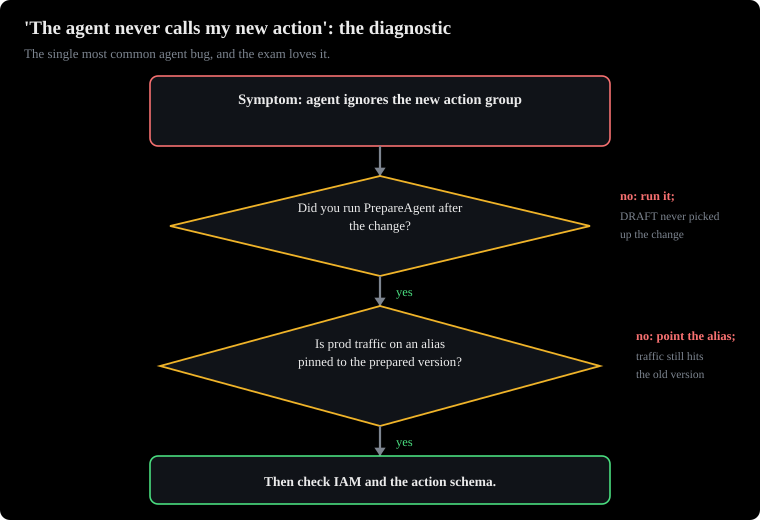
Why this chapter comes next. Lab 4 showed Lambda serving the client. Now change it. Lambda becomes the agent's hands. This is the exact request and response contract. Bedrock Agents use this contract to call your code.
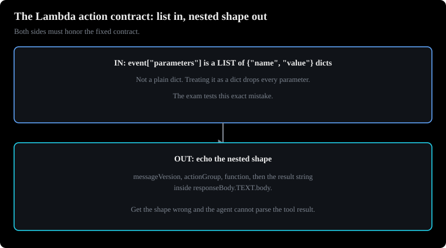
How to read this diagram
- Left: the request. It carries messageVersion, actionGroup, function, and parameters.
- Right: the response. It echoes the same fields and adds the result in responseBody.
- Bottom: a wrong field name means the action fails.
Give a Bedrock Agent real hands. The lab's weather function shows the exact event the agent sends. It also shows the exact response the agent expects.
Prerequisites: Chapter 4 (Lambda handlers and the proxy response shape). Action-group Lambdas reuse that shape.
What this lab teaches
A Bedrock Agent reasons. It acts through action groups. An action group connects the agent to a Lambda function. It also connects to a schema. The schema describes the available functions. There are two schema styles.
One style is function details. You list simple named functions with parameters. The other style is an OpenAPI schema. You describe REST-style operations. The lab's weather.py uses the function-details style. It implements a get_weather function.
This function takes a city and units.
The contract has two parts. The agent sends an input event. The event contains the agent name, the action group name, the function name, a parameters list, and a messageVersion. The parameters list has name-type-value entries. The Lambda must return a response. The response wraps the result.
It includes messageVersion, response.actionGroup, response.function, and response.functionResponse.responseBody.TEXT.body. If you use an OpenAPI schema, the event has apiPath and httpMethod. The response has an HTTP status code. The Bedrock user guide documents this shape. See the page on configuring Lambda functions for agents.
Why it exists: when you would use it in production
An agent without actions is a chatbot. Actions connect the agent to the business. Actions can look up orders. Actions can file tickets. Actions can query databases. Actions can call internal APIs.
Lambda is the natural host. Each action is a short code piece. It is event-driven. It scales to zero. The schema is the contract. It lets the model call your code reliably.
Parameter names, types, and descriptions tell the model what to pass.
How it works under the hood
- The user asks a question. The question needs a tool. For example, the user asks for the weather in a city. The agent's orchestration loop decides to call the function. The loop fills in parameters from the conversation.
- Bedrock invokes your Lambda with the action event. Your handler reads
event["parameters"]. This is a list of dicts. The handler extracts each named value. Defensive code handles missing parameters. It does not crash. - Your code does the work. It does a database query. It makes an HTTP call. It does a calculation. Keep the code fast. The agent waits. The user sees streaming text. The text pauses when tools run.
- The handler builds the response. It uses the exact nested shape. It returns the response. The agent receives the function result. The agent continues reasoning. The agent produces the final answer.
- Make a change to the agent's configuration. This includes action groups. You must run PrepareAgent. The DRAFT version picks up the change. Production traffic uses an alias. The team pins the alias to a prepared version.
This is a teaching example. It shows the parameter extraction pattern. The authors wrote it for this book.
# WHAT: Lambda as a Bedrock agent action-group function (tool the agent calls).
# WHY the parameter extraction: Bedrock sends parameters as a LIST of
# {"name": ..., "value": ...} dicts, not a dict. The comprehension converts
# it to a plain dict for easy lookup. .get("city", "unknown") is defensive:
# the model sometimes omits parameters, and crashing here fails the whole turn.
# WHY the response shape: Bedrock requires this exact nesting. messageVersion,
# actionGroup, and function must echo back what the agent sent, or Bedrock
# cannot match the result to the pending tool call. The actual data goes in
# responseBody.TEXT.body as a STRING; Bedrock passes it to the model as the
# tool result.
# WHAT BREAKS: wrong nesting or a non-string body and the agent gets an error
# instead of your result. Forgetting PrepareAgent after changing the action
# group: the DRAFT agent never sees the new function ("I added the action
# group but the agent never calls it", the most common agent bug).
def lambda_handler(event, context):
params = {p["name"]: p["value"] for p in event.get("parameters", [])}
city = params.get("city", "unknown")
result = lookup_weather(city) # your business logic here
return {
"messageVersion": event["messageVersion"],
"response": {
"actionGroup": event["actionGroup"],
"function": event["function"],
"functionResponse": {
"responseBody": {"TEXT": {"body": result}}
},
},
}
Remember two numbers. The Lambda response payload has a limit. This is the synchronous invocation payload limit. Return short results. Put large payloads in S3 with a reference. The agent ignores your new action group.
This happens until PrepareAgent runs. "I added the action group but the agent never calls it" is the most common agent bug. The exam likes this bug.
Common misunderstanding.
The action group schema is for the model. It is not for you. Parameter descriptions are instructions for the model. They tell the model what to pass. A parameter named q has no description. It gets bad input.
A parameter named city has a description. The description is "the city the user asked about, e.g. Paris". It gets the correct value.
User: "weather in Paris?"
|
v
+------------------+ decides tool call +------------------+
| Bedrock Agent | --------------------> | Action group |
| orchestration | function=get_weather | Lambda |
| loop | parameters=[city] | - read params |
| | <-------------------- | - run logic |
+------------------+ functionResponse +------------------+
| responseBody.TEXT.body
v
Final answer: "75 degrees and sunny in Paris."
Figure 5.1: A Bedrock Agent invokes a Lambda action. The event and response shapes are a fixed contract. Caption: This ASCII diagram is drawn for this book.
How to read this diagram
- Start at the top. Read the user question. The agent's loop decides a tool is necessary. Your code does not decide this.
- The arrow points to the right. It shows the invocation. It shows the function name. It shows the parameters list. This is the input part of the contract.
- The Lambda box has two jobs. The jobs run in order. First, extract named parameters carefully. Then, execute the business logic.
- The arrow points to the left. It shows the response part. It shows the nested
functionResponse.responseBody.TEXT.bodyshape. This shape carries the result string. - The agent resumes reasoning. It answers the user. It cites the tool result.
What breaks if a component fails
- The response nesting is wrong by one level. The agent cannot parse the result. The turn fails. Copy the shape exactly.
- You did not re-run PrepareAgent. This happened after you added the action group. The agent acts as if the tool does not exist.
- The Lambda needs more than a few seconds. The user watches a paused stream. Keep actions fast. Or make them asynchronous with a status check.
This section discusses exam angles and traps.
- Scenario: "the agent ignores the new action group". This always points to the missed PrepareAgent step. Scenario: "the agent must call an internal REST API with path parameters". This points to the OpenAPI-schema action group style. The schema is in S3.
- Distractors: Do not describe inter-agent communication as action groups. The exam uses the supervisor and collaborator mechanism for agent-to-agent. It does not use action groups. Do not put the tool logic in the agent instruction text. Put it in a real function.
- A troubleshooting angle hides a bug in the response nesting. One wrong level means the result does not reach the model.
- Function details are for simple named functions. OpenAPI is for REST-style operations with paths and methods. Match the style to the scenario.
- The
parameterslist has name, type, and value entries. A distractor may show a flat dictionary. The real shape is a list of entries. - Session attributes travel in the event. This lets actions read conversation context that the agent stored earlier.
Practice question
A developer adds a new action group with a Lambda function to a Bedrock Agent. The developer tests in the console. The agent does not call the new function. The Lambda works when invoked directly. What is the MOST likely cause?
A. The Lambda function's timeout is too short for the agent's orchestration loop.
B. PrepareAgent did not run after the action group change. The DRAFT version does not include it.
C. The agent's IAM role does not have bedrock:InvokeModel permission.
D. The action group needs an OpenAPI schema definition. Function details are not supported.
B is correct. Agent configuration changes take effect after preparation. Preparation packages them into the DRAFT version. The Lambda works alone. This proves the function is good. The agent does not know about it yet.
A is wrong. A timeout problem would show a failed invocation. It would not show the agent never trying the call.
C is wrong. A missing InvokeModel permission would break all model calls. It would not break only the new action group. The agent reasons well.
D is wrong. Its premise is false. The platform supports both function details and OpenAPI schemas as action group styles.
Practice question
A developer tests a Lambda-backed Bedrock agent action. The developer invokes the Lambda directly in the console. The test shows the function logic works. But the response does not show in the agent trace. The agent reports a tool error. What is the MOST likely cause of the response problem?
A. The Lambda returned a JSON object as the body. It did not return a string. So Bedrock could not pass the result to the model.
B. The Lambda's execution role does not have the bedrock:InvokeAgent permission.
C. The agent's foundation model does not support function calling.
D. The response did not include the sessionId field. Bedrock requires this field on every action response.
A is correct. The agent contract requires the result in responseBody.TEXT.body as a string. A raw JSON object there breaks the parse. So the agent sees a tool error. The business logic worked.
B is wrong. The Lambda does not invoke Bedrock in this flow. Bedrock invokes the Lambda. InvokeAgent is not part of this path.
C is wrong. The question says the team tries the action. A model without function support would never reach the tool-call stage.
D is wrong. sessionId is not a required field of the action-group response. The failure is in the body shape. It is not a missing field.
Next: Lab 6 ships the agent. Containerize the agent. Deploy the agent to AgentCore Runtime.
6. Lab: AgentCore Runtime deployment
Why this chapter comes next. Your agent works on a local computer. The agent has hands. This lab ships the agent. Containerize the agent. Satisfy the runtime contract.
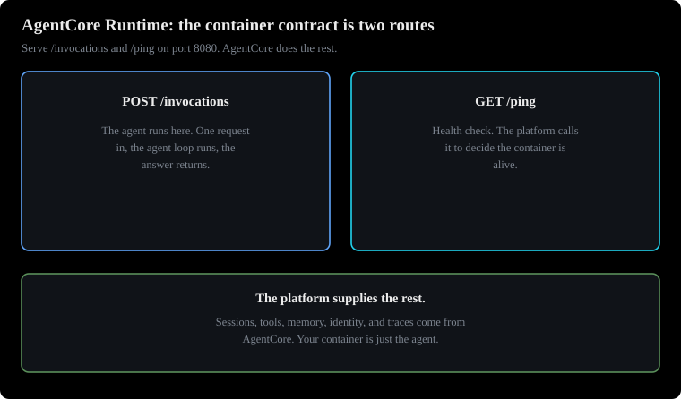
How to read this diagram
- POST /invocations: the platform sends the request here.
- GET /ping: the platform checks this for health.
- Sides: the platform adds sessions, memory, identity, and traces.
Let AgentCore host the agent with sessions, memory, and identity.
Take the laptop agent. Ship the agent. Containerize the agent. Satisfy the runtime contract. Let AgentCore host the agent with sessions, tools, memory, and identity.
Prerequisites: Chapter 1 has the Strands agent. You containerize this agent. Chapter 5 introduced the Bedrock Agents. You migrate from these agents.
What this lab teaches
Amazon Bedrock AgentCore is the managed platform. It runs agents in production. It has five parts. You must name these parts. Runtime is serverless hosting for your agent container. Gateway changes your APIs and Lambda functions into MCP-compatible tools.
MCP is the Model Context Protocol. This is the standard interface. Agents use this interface to call tools. Memory is managed short-term and long-term agent context. Identity is agent authentication. It gives access to third-party applications.
Observability is tracing and monitoring with OpenTelemetry. The lab focuses on Runtime. It packages the Strands agent from chapter 1. It makes a container that AgentCore can host.
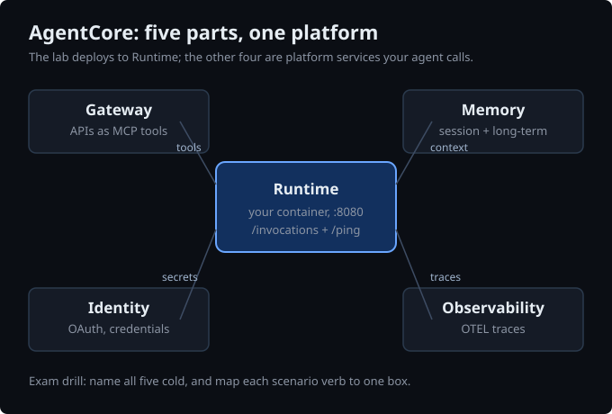
The Runtime speaks to your container. It uses plain HTTP. It has a fixed contract. Listen on port 8080. Answer POST /invocations with your agent logic. Answer GET /ping as a health check.
The bedrock-agentcore Python SDK provides BedrockAgentCoreApp. This is a small wrapper. It implements this contract for you. You mark one function with @app.entrypoint. It receives the JSON payload from each /invocations call.
Why it exists: when you would use it in production
A laptop agent has no sessions. It has no scaling. It has no safe credential handling. It has no audit trail. AgentCore gives you managed sessions. The platform keeps a session alive across calls.
It can keep the session warm for background work. It gives a standard way to show tools through Gateway. This is instead of hand-wiring each integration. It gives memory that lives longer than any single container. The exam cares about the migration story. Migrate from Bedrock Agents (chapter 5) to AgentCore.
Do this when you need framework freedom. This includes Strands, LangGraph, and CrewAI. Do this without giving up managed hosting.
How it works under the hood
The lab's agentcore.py and Dockerfile follow this sequence:
app = BedrockAgentCoreApp()creates the wrapper. The@app.entrypointdecorator marksinvoke(payload, context)as the handler. The payload is the deserialized JSON body of thePOST /invocationsrequest. The context carries runtime information. This includes the session ID.- Inside the handler, the code builds the Strands agent. It builds it exactly as in chapter 1. It runs the agent on
payload.get("prompt", ""). The handler returns a plain dictionary. The SDK serializes this dictionary back as the JSON response. app.run()starts an HTTP server on port 8080. The same line runs the agent locally for testing. It serves the agent inside the container in production. Test withcurl -X POST http://localhost:8080/invocationsbefore you deploy.- The Dockerfile builds the image. It uses a slim Python base. Install from
requirements.txt. This includes thebedrock-agentcoreSDK,strands-agents, andstrands-agents-tools. Add the OpenTelemetry distro. This makes traces flow to Observability. Set the region. Create a non-root user. Show port 8080. Start the module. - The platform requires
linux/arm64images. The container must bind0.0.0.0:8080. Do not bind localhost. If you bind localhost, the platform's health checks cannot reach it.
Adapted teaching snippet (written for this volume):
from bedrock_agentcore.runtime import BedrockAgentCoreApp
# WHAT: the app object. It wires your function into the platform's HTTP contract.
# WHY: AgentCore Runtime only speaks two routes: POST /invocations and GET /ping.
# BedrockAgentCoreApp provides both; you only write the handler.
app = BedrockAgentCoreApp()
# WHAT: @app.entrypoint marks invoke() as the request handler.
# WHY the signature: payload is the JSON body the caller POSTed; context carries
# session info. payload.get("prompt", "") tolerates callers that send no prompt.
# WHAT BREAKS: returning anything but a JSON-serializable dict breaks the
# response serialization. Raising inside invoke() surfaces as a 500 to the caller.
@app.entrypoint
def invoke(payload, context):
answer = run_my_agent(payload.get("prompt", ""))
return {"answer": str(answer)}
# WHAT: app.run() starts the HTTP server on port 8080.
# WHY the __main__ guard: the same file runs locally for testing AND inside the
# container in production. Local test: curl -X POST localhost:8080/invocations.
# WHAT BREAKS: binding localhost instead of 0.0.0.0 works on your laptop but
# fails the platform health checks; the session gets reaped. The SDK binds
# 0.0.0.0 by default, do not override it.
if __name__ == "__main__":
app.run() # serves POST /invocations and GET /ping on port 8080
Gateway deserves one extra line. The exam names it. It changes existing APIs and Lambda functions into MCP-compatible tools. Agents built in any framework can call them. They use the Model Context Protocol. This is instead of bespoke integrations.
Identity handles the OAuth and credential side. Your agent code never holds raw secrets.
Common misunderstanding.
AgentCore Runtime is not "Lambda for agents." Lambda caps executions at 15 minutes. It has no session concept. Runtime manages long-lived agent sessions. It has health checks and idle timeouts. Picking Lambda for a long-running agent session is a standard exam trap.
Developer laptop AWS
+----------------+ +-------------------------------+
| agentcore.py + | | AgentCore Runtime |
| Dockerfile |---> | session per caller |
| docker build | ECR | | |
+----------------+ --> | v |
| Container (arm64, :8080) |
Caller --------------->| POST /invocations -> handler |
| GET /ping -> health |
| | |
| +--> Gateway: MCP tools |
| +--> Memory: session + |
| | long-term context |
| +--> Identity: OAuth / |
| credentials |
| +--> Observability: |
| OTEL traces |
+-------------------------------+
Figure 6.1: Deploying a Strands agent on AgentCore Runtime. The container contract has two HTTP routes. The platform supplies sessions, tools, memory, identity, and traces. Caption: ASCII diagram drawn for this volume.
How to read this diagram
- First, the developer builds the image. The developer uses the agent code and the Dockerfile. Then, the developer pushes the image to a container registry. This is ECR, the Elastic Container Registry.
- The Runtime starts the container. The Runtime manages one session for each caller. Sessions stay alive across calls. The platform checks
/pingto know the container is alive. - Each caller request is a
POST /invocations. The request has a JSON payload. The@app.entrypointfunction processes the request. The function returns JSON. - The agent uses four platform services inside the session. The agent uses Gateway for MCP tools. The agent uses Memory for context that stays after the container stops. The agent uses Identity for credentials. The agent uses Observability for traces.
What happens if a component fails
- If you build the image for the wrong CPU architecture, the container does not start. Build for
linux/arm64. - If the server binds localhost, health checks fail. The server must bind
0.0.0.0. The platform ends the session. This happens even if the agent works locally. - If
/pingfails or is slow, the platform treats the session as dead. The SDK has a built-in handler. Use this handler. Do not write your own.
This section discusses exam angles and traps.
- Scenario: A team built an agent in an open-source framework. The team needs managed hosting with sessions. The team needs tool access through MCP. The team does not want server management. The answer is AgentCore Runtime. Use Gateway for the tools. Distractors: ECS with a hand-built session store (you own sessions, scaling, and health checks), Lambda (15-minute cap, no sessions), Bedrock Agents (managed but locks you into its framework and console model).
- Map each need to a component. "Tools for any framework" points to Gateway. "Remember users across weeks" points to Memory. "Call Salesforce on the user's behalf" points to Identity.
- Name all five components: Runtime, Gateway, Memory, Identity, Observability. Questions often test Gateway versus Memory versus Identity. They use scenario verbs.
- The container contract is
POST /invocationsplusGET /pingon port 8080. A question about "the deployed agent never receives traffic" points to the contract. It does not point to the model. - Migration direction is important. Bedrock Agents to AgentCore is the documented path. Use this path when teams outgrow the managed agent framework. The reverse path does not exist.
Practice question
A team has a working Strands agent on a developer laptop. For production, the team needs four things. First, managed hosting with per-caller sessions. Second, the agent's existing REST APIs exposed as tools through MCP. Third, user preferences remembered across weeks. Fourth, no server management.
Which combination is MOST correct? (Select TWO.)
A. Deploy the agent container to AgentCore Runtime. Expose the REST APIs through AgentCore Gateway.
B. Store user preferences in AgentCore Memory.
C. Package the agent as a Lambda function with a 15-minute timeout. Keep preferences in Lambda environment variables.
D. Rebuild the agent as a Bedrock Agent. AgentCore Runtime only hosts Bedrock Agents.
A and B are correct. Runtime gives managed sessions and hosting for any-framework agents. Gateway converts existing APIs into MCP tools. Memory is the managed store for long-lived agent context. Together, they satisfy every requirement.
C is wrong for two reasons. Lambda has a 15-minute cap. Lambda has no session concept. Environment variables are not a user-preference store. This is the "Lambda for everything" trap.
D is wrong. The premise is false. Runtime hosts any-framework agents. This is its purpose. The Bedrock-Agents-to-AgentCore migration path exists for teams. These teams started managed.
They need framework freedom. The reverse path does not exist.
Next: Lab 7 covers the infrastructure. This includes KMS, X-Ray, SQS, and the foundations.
7. Supporting labs: KMS, X-Ray, SQS, and foundations
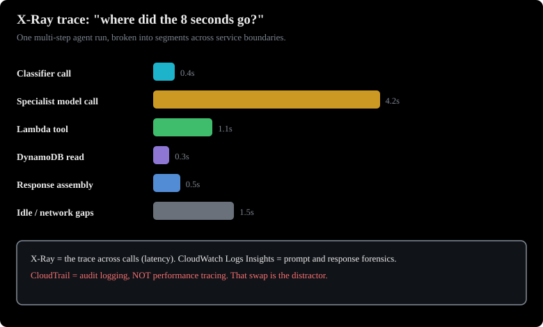
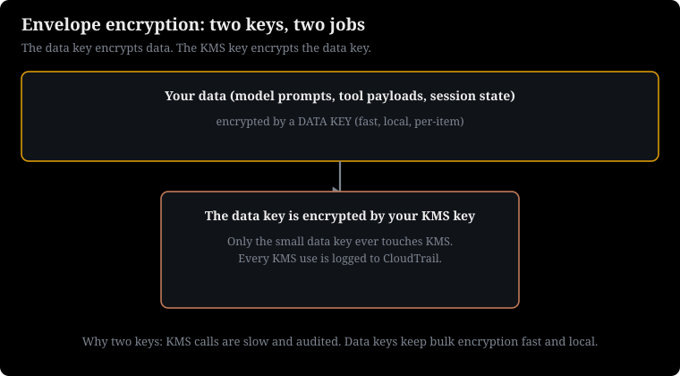
How to read this diagram
- Step one: KMS makes a data key.
- Step two: the data key encrypts the data. KMS encrypts the data key.
- Step three: CloudTrail logs every KMS use.
Why this chapter comes next. The agents are built and deployed. This chapter covers the infrastructure under the agents. This includes encryption, tracing, messaging, and the building blocks. Every GenAI architecture uses these building blocks.
The remaining lab files map to their exam roles. These roles are encryption, tracing, messaging, and the building blocks under every GenAI architecture.
Prerequisites: There are no prerequisites. These are the service building blocks. Other chapters use these building blocks.
What this chapter covers
The lab pack includes supporting exercises. These exercises are not GenAI-specific. But they appear often in GenAI architectures and exam scenarios. Each exercise gets its exam framing here. No file is left unmapped.
One concept connects several of these labs. This concept is RAG (retrieval-augmented generation). You do not train a model on your documents. You retrieve the correct passages at query time. You give these passages to the model as context. A Bedrock knowledge base is the managed implementation of this pattern.
The book.txt and bylaws files below are the raw material. A pipeline ingests this material.
KMS: encryption for model data
AWS Key Management Service manages the encryption keys. These keys protect data at rest. The lab's CLI script shows the envelope pattern. Encrypt a file with a KMS key. Store the ciphertext. Decrypt it back with the same key.
In GenAI architectures, KMS keys encrypt fine-tuning datasets in S3. They encrypt Bedrock model invocation logs. They encrypt flow definitions. The exam tests two things. First, customer-managed keys encrypt sensitive training or log data. Second, VPC endpoints keep Bedrock traffic off the public internet.
A question about "encrypt the data used to customize a model" points at KMS plus S3 server-side encryption. It does not point at the model service itself.
X-Ray: tracing the agent's path
AWS X-Ray traces requests. The requests cross service boundaries. X-Ray shows each segment's latency. The lab's CloudFormation template connects X-Ray to a sample application. For GenAI, X-Ray answers "where did the 8 seconds go". This is across a multi-step agent run.
This includes the classifier call, the specialist's model call, the Lambda tool, and the DynamoDB read. The exam pairs X-Ray with CloudWatch Logs Insights for GenAI observability. X-Ray provides the trace across calls. Logs Insights provides prompt and response forensics. A distractor offers CloudTrail for latency debugging. CloudTrail is audit logging.
It is not performance tracing.
SQS: decoupling the pipeline
Amazon SQS is a managed message queue. You send, receive, and delete messages. The lab script covers the basics. In GenAI pipelines, SQS decouples ingestion from processing. Uploads land. A queue buffers them.
Lambda workers move the data from the queue into chunking and embedding. The exam tests SQS for fan-out and buffering. It also tests what SQS is not. It is not a configuration store. AppConfig is a configuration store. It is not a state store.
DynamoDB is a state store. It is not a vector store.
Foundations: CLI, EC2 metadata, user data, Kinesis, CloudFormation basics
- CLI and EC2 metadata: The metadata script shows how code on EC2 finds its own identity and credentials. Exam angle: Use IAM roles for EC2 instead of baked-in keys. Use IMDSv2 (Instance Metadata Service version 2, the session-token-based metadata endpoint) for metadata security.
- EC2 user data: These are bootstrap scripts. They configure an instance at launch. Exam angle: User data runs one time at launch. It is not a configuration management system. It is not a place for secrets.
- Kinesis data streams: The lab script creates a stream. This stream allows ordered, replayable ingestion. Exam angle: Use Kinesis for streaming data into processing. For example, use it for a live transcript feed into a summarizer. Use SQS for simple buffering.
- CloudFormation basics: The two templates build from a bare instance. They build to an instance with a security group and elastic IP. Exam angle: CloudFormation provides declarative infrastructure. CloudFormation is wrong for runtime model switching. It is a deployment mechanism.
The two big files: book.txt and the bylaws document
The 260 KB book.txt and the bylaws Word document are sample knowledge sources. Their exam role is the RAG ingestion story. Raw text loses structure like headings and tables. So, pipelines use extraction (Textract, Comprehend). They use structure-preserving conversion. They use divider markers to improve chunking.
This happens before embeddings are built. A scenario says "10,000 mixed files a day into a knowledge base." These files are what that ingestion pipeline uses.
Raw sources (book.txt, .docx, uploads)
|
v
+------------------+ +------------------+
| Ingestion |---->| SQS buffer |
| Lambda / BDA | | workers drain |
| extract structure| +------------------+
+------------------+ |
| KMS encrypts at rest v
v +------------------+
+------------------+ | Chunk + embed |
| S3 (versioned, |--->| -> vector store |
| KMS-encrypted) | +------------------+
+------------------+
X-Ray traces every hop; CloudWatch alarms on failures
Figure 7.1: Where the supporting labs fit in a GenAI ingestion pipeline. Caption: ASCII diagram drawn for this volume.
How to read this diagram
- Start at the top. Raw documents enter. Ingestion extracts structure. This helps chunking work. Ingestion uses Lambda preprocessing or Bedrock Data Automation.
- SQS buffers the work. This prevents upload surges from overwhelming the embedders. Workers drain at their own speed.
- S3 holds the raw files and the processed files. S3 versions and encrypts the files with KMS. No files are public.
- Chunking and embedding feed the vector store. X-Ray traces the full path. CloudWatch watches for failures.
What breaks if a component fails
- If you skip structure extraction, tables and headings break across chunks. Retrieval quality decreases. This causes bad RAG answers. The exam hides this root cause in ingestion.
- If the queue has no dead-letter handling, poison messages retry forever. They block the pipeline.
- If the bucket has no encryption, a compliance scenario fails. This happens even if retrieval is good.
These labs answer the "which service for this job" questions. Use KMS for encryption at rest. Use X-Ray for cross-service latency tracing. Use SQS for buffering between pipeline stages. Use Kinesis for ordered replayable streams. The traps are always the wrong-plane tools.
Do not use CloudTrail for metrics. Do not use S3 for session state. Do not use ElastiCache for durable vectors.
Practice question
A RAG ingestion pipeline processes thousands of documents daily. Requirements: buffer upload surges, encrypt stored documents with customer-managed keys, and trace end-to-end latency when a document stalls. Which combination is MOST correct? (Select THREE.)
A. Buffer incoming documents with SQS. This lets embedding workers drain at their own speed.
B. Encrypt the S3 buckets with KMS customer-managed keys.
C. Enable X-Ray tracing across the ingestion Lambdas. This finds slow hops.
D. Store the documents in ElastiCache for durability. Query CloudTrail for latency metrics.
E. Skip structure extraction. The embedding model will understand tables by itself.
A, B, and C are correct. A separates surge from processing. B meets the customer-managed encryption requirement. C gives cross-service latency traces. This answers the stalled-document question.
D is wrong two times. ElastiCache is an ephemeral cache. It is not durable document storage. CloudTrail is for audit logging. It is not for metrics or tracing. This is the wrong-plane double trap.
E is wrong. Raw unstructured text breaks tables across chunks. Structure extraction before chunking keeps retrieval quality high.
Next: Lab 8 codifies the stack as CDK. This changes click-ops to repeatable infrastructure.
8. Lab: CDK for GenAI infrastructure
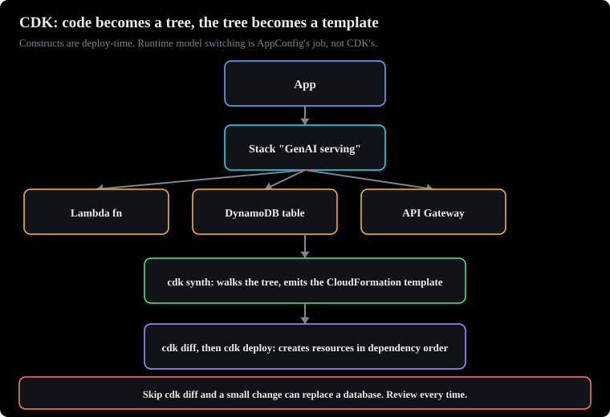
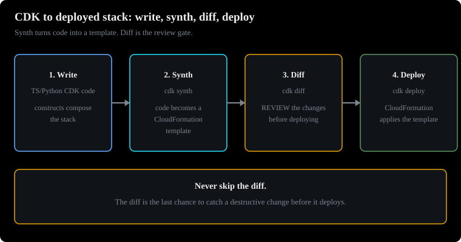
How to read this diagram
- Step one: write constructs in code.
- Step two: cdk synth builds the CloudFormation template.
- Step three: cdk diff shows the change. Review it before deploy.
Why this chapter comes next. Lab 4's serving path was built by hand. This lab codifies the full GenAI stack in CDK. This makes it repeatable, reviewable, and auditable.
Define the whole GenAI stack in a real programming language. Let it compile to CloudFormation.
Prerequisites: Read Chapter 4. This chapter shows the serving path. Read Chapter 7. This chapter shows the services.
What this lab teaches
The AWS Cloud Development Kit (CDK) lets you define cloud infrastructure. You use languages such as TypeScript or Python. You write constructs. Constructs are small building blocks. Examples are a Lambda function, an S3 bucket, or a DynamoDB table. You combine constructs into a stack.
Run cdk synth. This compiles your code into a CloudFormation template. Run cdk deploy. This creates or updates the stack from that template. The lab's stack file builds a realistic pattern. It has an S3 bucket for uploads.
It has a Lambda function with an IAM role. It has a DynamoDB table. It connects these items with outputs.
The same pattern hosts the serving path for GenAI workloads. This includes the Lambda that calls Bedrock. It includes the API Gateway in front of the Lambda. It includes the DynamoDB table for session state. It includes the IAM policies that scope each piece. CDK is useful for GenAI because of IAM.
The Lambda's role gets exactly bedrock:InvokeModel. This applies to the specific model ARNs it may call. It also gets logging permissions. It gets no other permissions.
Why it exists: when you would use it in production
A production GenAI service has 12 resources with relationships. The function needs the table name. The role needs the model ARNs. The gateway needs the function ARN. Hand-written templates for this drift out of sync. They do not match the code they deploy.
CDK keeps infrastructure next to application code. It uses a language with loops, conditions, and tests. Every environment is the same stack class. This includes dev, staging, and prod. Each environment uses different parameters. This repeatability is what the exam means.
It means standardized, reusable components.
How it works under the hood
- You write a stack class. This class extends the CDK Stack. Each construct call adds a resource to an internal tree. For example,
new dynamodb.Table(...)adds a resource. References between constructs become CloudFormation references automatically. For example, pass the table to the Lambda's environment. cdk synthwalks the tree. It emits the CloudFormation template. Review it withcdk diffbefore you deploy. Diff shows exactly what will change. This includes replacements that would delete data.cdk deploygives the template to CloudFormation. CloudFormation creates or updates resources in dependency order. Outputs print at the end. For example, the bucket name prints. Other stacks can import these outputs.- For GenAI, add the Bedrock permissions to the Lambda's role. Scope these permissions to the models the function may call. Least privilege is an exam staple here.
bedrock:*on*is the distractor. - Removal policies decide what happens when you delete a stack. Data stores usually get retain or snapshot policies. The lab's destroy policy is only for throwaway lab resources.
Adapted teaching snippet (the least-privilege GenAI role pattern, written for this volume):
// inside the stack: the serving Lambda may call two models, nothing else
fnRole.addToPolicy(new iam.PolicyStatement({
effect: iam.Effect.ALLOW,
actions: ["bedrock:InvokeModel"],
resources: [
"arn:aws:bedrock:us-east-1::foundation-model/amazon.nova-lite-v1:0",
"arn:aws:bedrock:us-east-1::foundation-model/amazon.nova-micro-v1:0",
],
}));
The lab's stack also shows the event-source pattern. A Lambda subscribes to S3 events. Every upload triggers processing. For GenAI ingestion pipelines, that pattern feeds new documents. It feeds them into chunking and embedding. It does not use a polling loop.
Common misunderstanding.
CDK is deploy-time infrastructure. It is not runtime configuration. AppConfig's job is to switch models at runtime (chapter 4). A question asks for model switching "without redeploy". It offers a CDK redeploy as the answer. This question tests if you confuse the two planes.
app code (TypeScript / Python)
|
| cdk synth
v
+---------------------+ +---------------------+
| CloudFormation |---->| cdk diff (review!) |
| template | +---------------------+
+---------------------+ |
| cdk deploy v approved
v +---------------------+
+---------------------+ | CloudFormation |
| Stack: |<-----| creates / updates |
| - Lambda (serving) | +---------------------+
| - API Gateway |
| - DynamoDB (state) |
| - IAM role: |
| bedrock:InvokeModel
| on 2 model ARNs |
+---------------------+
Figure 8.1: From CDK code to a deployed GenAI stack. Synth, review the diff, then deploy. Caption: ASCII diagram drawn for this volume.
How to read this diagram
- Start at the top. You write application plus infrastructure in one language. The stack class is the unit of deployment.
cdk synthcompiles to a CloudFormation template. No resources exist yet. This step is free and safe.cdk diffshows the change set. Read it every time. A replacement on a stateful resource deletes data.cdk deployexecutes through CloudFormation. CloudFormation orders resource creation. It rolls back on failure.- The stack box shows the GenAI serving pieces. It shows the least-privilege IAM role. The role is the security boundary. The exam tests this boundary.
What breaks if a component fails?
- If you do not use
cdk diff, a small code change can replace a database. Always review before you deploy. - If the IAM role is too broad, a compromised function can call any model. It can call any model in any account context that the role allows. Limit the scope to model ARNs.
- If you build environments by hand, dev and prod environments will differ. Bugs will only happen in production.
This section discusses exam angles and traps.
- Scenario: "Deploy the GenAI serving stack many times across dev, staging, and prod. Use least-privilege access." The most correct answer is CDK (or CloudFormation) with a scoped IAM. Distractors: Console click-ops are not repeatable. CDK for runtime model switching is the wrong plane. That is AppConfig. A single wildcard IAM policy does not use least privilege.
- Second angle: "The deployment replaced the DynamoDB table and lost session data." This points to the skipped diff review. It also points to the removal policy.
- CDK makes CloudFormation code. Any option that says CDK deploys "without CloudFormation" does not understand the tool.
- ARN scoping tests least privilege.
bedrock:InvokeModelon specific foundation-model ARNs is always better thanbedrock:*on*. - Infrastructure as code answers "standardized, reusable components across deployments." This phrase is from the exam guide's design task.
Practice question
A team must deploy an identical GenAI serving stack to dev, staging, and production. The stack includes Lambda, API Gateway, and a DynamoDB session table. The Lambda must call Bedrock models. Security needs least privilege. Which approach is MOST correct?
A. Build each environment by hand in the console. Attach the AWS managed AdministratorAccess policy to the Lambda role for simplicity.
B. Define one CDK stack class. Make one instance for each environment. Give the Lambda role bedrock:InvokeModel. Scope it to the specific model ARNs it needs. Review cdk diff before each deploy.
C. Write the Lambda code to assume a new IAM role at runtime. This role switches models with CDK redeploys.
D. Store the CloudFormation template in a shared drive. Email it to the person who deploys that week.
B is correct. One stack class gives identical environments. ARN-scoped InvokeModel is least privilege. Diff review finds destructive replacements. It meets repeatability, security, and safety.
A is wrong for two reasons. Console builds are not repeatable across environments. AdministratorAccess on a serving role is not least privilege.
C is wrong because it mixes up the planes. AppConfig handles model switching at runtime. CDK redeploys are deployments, not runtime configuration.
D is wrong. A template on a shared drive with no versioning or pipeline is click-ops with extra steps. It fails repeatability and auditability.
Next: Lab 9 finishes the task. It shows CI/CD with eval gates. This makes sure no prompt or model ships without measurement.
9. Lab: CI/CD with eval gates
Why this chapter is next. The stack is now code. The last gap is change safety. This lab reviews prompts and models. It evaluates them. It uses canary rollout before they go to production.
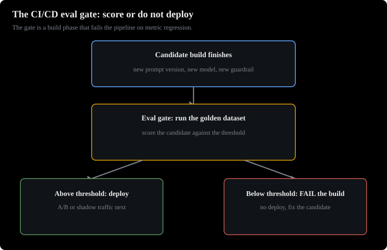
How to read this diagram
- Left: the candidate prompt or model enters the gate.
- Middle: it is scored on the golden dataset.
- Right: above the threshold it deploys. Below it the build fails.
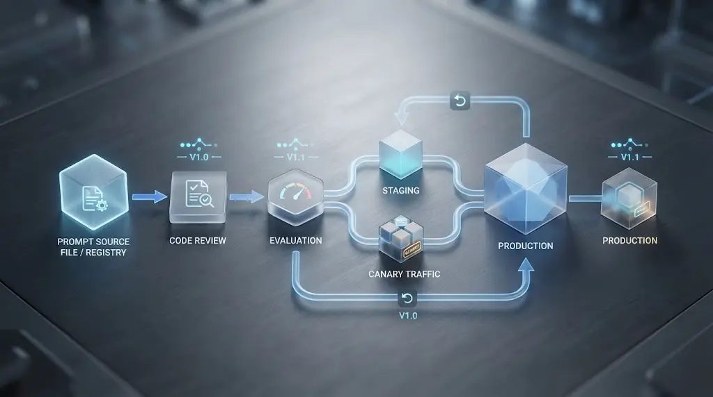
Ship prompt and model changes like code. Use pipeline stages, build specifications, and an evaluation gate. This gate blocks bad releases.
Prerequisites: Read Chapter 2 and Chapter 5. These chapters show the flows and agents. The pipeline shifts their aliases. Read Chapter 7. This chapter shows RAG and the evaluation vocabulary.
What this lab teaches you
CI/CD on AWS is a pipeline of stages. These stages are source, build, test, and deploy. AWS CodePipeline controls the stages. AWS CodeBuild runs the build. A buildspec.yml file controls the build. This file has phases: install, pre_build, build, and post_build.
AWS CodeDeploy sends the artifact to its target. The lab pack's buildspec.yml shows the basic structure. Install a runtime. Echo through the phases. Run a check in the build phase. The build fails if the check fails.
For GenAI, the build phase gets an evaluation gate. A prompt or model change is a behavior change. Behavior needs tests. The gate runs an evaluation suite. It compares metrics against thresholds. It fails the build on regression.
The pipeline stops. The bad prompt does not deploy. The team gets a red build. They do not get a production incident.
Why it exists: when you use it in production
Teams edit prompts in the console. They paste them into production. They get silent regressions. A reworded system prompt can stop refusal behavior. A model swap can change tone. A new few-shot example can bias outputs.
CI/CD makes prompt and configuration changes reviewable. It makes them testable. It makes them reversible. The evaluation gate is like a unit test suite for GenAI. It shows "the behavior we promise." It blocks anything that breaks this behavior.
How it works
- A developer pushes a change to the prompt templates or model configuration in git. CodePipeline's source stage gets the change.
- CodeBuild runs
buildspec.yml. The install phase sets up the runtime. The pre_build phase prepares. The build phase runs two suites. These are fast unit checks (schema validation of prompt templates, configuration linting) and the evaluation gate. - The evaluation gate uses the candidate prompt or model. It uses a golden dataset. It scores the prompt or model. It checks faithfulness for RAG answers. Faithfulness means each claim in the answer has support from the retrieved passages. It checks toxicity and refusal for safety. It checks format compliance for structured outputs. It compares scores to thresholds. The repository stores these thresholds. Any threshold breach fails the build.
- If the build is green, the pipeline continues. An optional manual approval stage is for high-risk changes. Then comes deployment. Deployment for GenAI usually means shifting a flow alias or agent alias to the new version. Or it means a canary. A canary sends a small part of traffic first. CloudWatch alarms watch token error rates and latency during this time.
- If the build is red, the pipeline stops. The previous version continues to serve. Rollback means shifting the alias back. This is instant because versions are immutable.
Adapted teaching snippet (a buildspec evaluation gate, written for this volume):
version: 0.2
phases:
install:
runtime-versions:
python: 3.12
build:
commands:
- echo "Validating prompt templates"
- python validate_prompts.py prompts/
- echo "Running eval gate against golden dataset"
- python eval_gate.py --dataset golden/qa.jsonl
--min-faithfulness 0.85 --max-toxicity 0.02
# any non-zero exit fails the build and stops the pipeline
The evaluation suite can use Bedrock's evaluation features. It can use programmatic metrics for objective checks. It can use LLM-as-a-judge. This is a second model that scores outputs on quality. Quality dimensions are faithfulness and style. It can use human review for subjective checks.
The pipeline runs the automated tiers on every change. It reserves human review for releases that cross risk thresholds.
Common misunderstanding.
An evaluation gate is not "run the model once and look at it." It is a repeatable suite with thresholds. The team checks it into the repository. It runs on every change. Manual console spot-checks are what the gate replaces.
git push (prompts/ + config)
|
v
+------------------+ +-------------------------------+
| CodePipeline |---->| CodeBuild (buildspec.yml) |
| source stage | | install -> pre_build -> build |
+------------------+ | unit checks (schemas) |
| EVAL GATE: golden dataset |
| faithfulness >= 0.85 |
| toxicity <= 0.02 |
+---------------+---------------+
|
fail: stop here | pass: continue
v
+-------------------------------+
| approval (manual, high risk) |
+---------------+---------------+
v
+-------------------------------+
| deploy: shift alias / canary |
| CloudWatch alarms on errors |
+-------------------------------+
Figure 9.1: A GenAI pipeline with an evaluation gate. The gate is a build phase. It fails the pipeline on metric regression. Caption: ASCII diagram drawn for this volume.
How to read this diagram
- Start at the top. The only trigger is a git push. Console edits bypass the repository. They bypass the gate. This is why the repository is the source of truth.
- The build box shows the phases in order. The evaluation gate is inside the build phase. It is after the fast unit checks. This is because evaluations cost model calls. They should run only on good inputs.
- Read the two exit arrows. Fail stops the pipeline immediately. Pass continues to approval and deploy.
- Deploy means alias shift or canary. Never overwrite the serving version in place. Alarms watch the rollout.
What breaks if a component fails?
- If thresholds are set one time, they are not recalibrated. The gate blocks everything or blocks nothing. Review thresholds when the dataset or product changes.
- If the golden dataset is old, the gate tests yesterday's product. Refresh it from production traffic samples.
- If evaluations run against the production model endpoint, the gate measures the wrong thing. Pin the candidate version explicitly.
This section discusses exam angles and traps.
- Scenario: "validate a new prompt version before rollout." Or: "a prompt change caused a production incident; prevent recurrence." The most correct answer is a pipeline. It has automated regression testing. It uses a canary or alias-based deployment. Distractors: manual testing in the console as the complete answer (not repeatable, not a gate). Also: deploying straight to production because "prompts are not code" (they are behavior changes and need gates). Also: unit tests alone with no behavioral eval (unit tests cannot catch tone or faithfulness regressions).
- Second angle: "which eval method for brand voice at scale" points at LLM-as-a-judge in the gate plus human spot checks.
- Use programmatic evaluation for objective metrics. Use LLM-as-a-judge for quality at scale. Use human evaluation for subjective judgment. Match the method to the metric. The exam tests this mapping.
- Canary plus alias shift is the deployment answer. Blue-green full swaps are also good. But the exam's GenAI scenarios usually say canary.
- A failing evaluation gate must stop the pipeline. An option that "alerts but deploys anyway" is never the most correct for a safety regression.
Practice question
A team edits Bedrock prompts weekly. Last month, a reworded system prompt silently dropped the product's refusal behavior for disallowed content. Nobody noticed this for one week. Which approach MOST reduces the chance of recurrence?
A. Require two engineers to check each prompt change in the console before pasting it into production.
B. Check prompts into git. Run a CodePipeline. CodeBuild executes an evaluation gate on a golden dataset with toxicity and refusal thresholds. Failures block deployment.
C. Write unit tests. These tests assert the prompt template files are valid JSON.
D. Deploy prompt changes on Fridays. The team can monitor them over the weekend.
B is correct. It makes prompt changes reviewable (git), repeatable (pipeline), and behaviorally tested (evaluation gate with the exact metrics that regressed: toxicity and refusal). A threshold breach stops the pipeline before production.
A is wrong. Manual checking is not repeatable. It does not scale. The incident already proved this process is not enough.
C is wrong. Schema validity says nothing about behavior. A valid-JSON prompt can still refuse nothing.
D is wrong and slightly comic. Deployment timing is not a safety control. Friday deploys are famously the opposite of safe.
Build checklist and verification log
What did the team check before this volume shipped?
- Do a parse check. The tags are balanced. The section IDs are unique. All rail anchors resolve. PASS.
- The file has zero em dashes. PASS.
- The file has zero gradients. Use palette variables only. PASS.
- Each chapter has a visual ASCII figure. Each chapter has a diagram walkthrough. The walkthrough has numbered flow. It has failure notes for each component. PASS.
- Each chapter has the Maarek framing. This includes: what it is, why and when, how AWS asks, exam tips and traps. It also has one practice question. This question has a why-right explanation. It has a why-each-distractor-wrong explanation. PASS.
- All explanations and exercises are new for this book. Only show short adapted snippets. Do not reproduce any lab file exactly. PASS.
- The content is generic only. Do not use names. Do not use employers. Do not use personal identifiers. PASS.
- There are no placeholders. There are no TODOs. There are no empty sections. PASS.
- There are no external dependencies. The HTML is a single self-contained file. There are no hotlinked images. All diagrams are ASCII. PASS.
This is the live verification log (2026-09-28).
- Verified against live sources: AgentCore has five components. These are Runtime, Gateway, Memory, Identity, Observability. The container contract is POST /invocations, GET /ping, port 8080, linux/arm64. This verification uses official Bedrock AgentCore dev guide URLs. It also uses corroborating samples.
BedrockAgentCoreAppuses@app.entrypoint. This uses the AgentCore SDK samples. Strands@tooldecorator semantics use a docstring as a description. They use type hints as a schema. This verification uses Strands SDK docs and samples. The Agent Squad package isagent-squad. It usesAgentSquad,route_requestcoroutine,BedrockClassifier,add_agent,response.metadata, andChatStorage. This verification uses the project's current docs. It also uses the AWS Solutions Guidance page. Bedrock Flows definition structure hasnodesandconnectionsarrays. It hasDataandConditionalconnection types. PrepareFlow has DRAFT behavior. This verification uses the official Bedrock API reference. It also uses CloudFormation docs. Bedrock agent action-group Lambda event and response shapes have a parameters list. They haveresponseBody.TEXT.body. They havemessageVersion. They have apiSchema versus functionSchema. This verification uses the Bedrock user guide page on Lambda configuration for agents. Nova model IDs areamazon.nova-lite-v1:0andamazon.nova-micro-v1:0. This verification uses multiple current sources. - Marked UNVERIFIED inline: The Iterator node has a sequential-processing detail. This is in chapter 2. The community reported this. Live documents did not confirm it during this build.
- Do not state as fact: volatile numbers. These are pricing and quotas. Omit them or label them illustrative. A limit is standard and documented. For example, Lambda's 15-minute maximum. State it as a documented limit.
The last verification was 2026-09-28. Check service details against current AWS documentation. Do this before the exam date.
The labs are complete. The next book is Question Patterns. It teaches how AWS asks questions. It covers the six question patterns. It covers the tactics for each format. It covers the 30 traps.
It has 81 new practice questions. These questions cover all five domains.